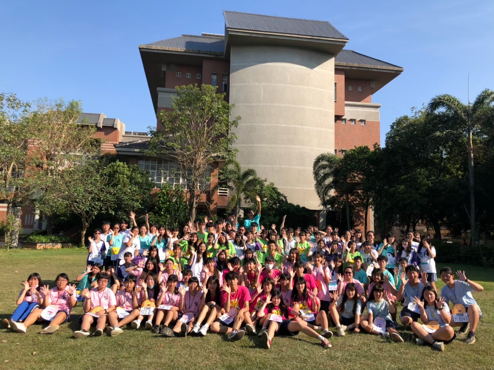
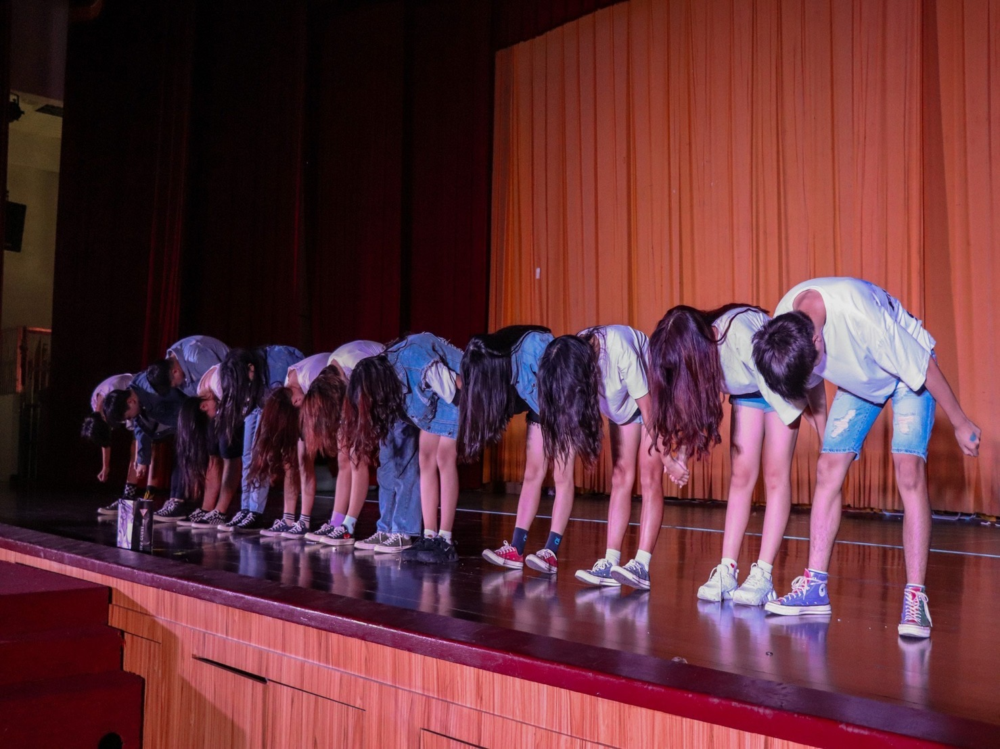
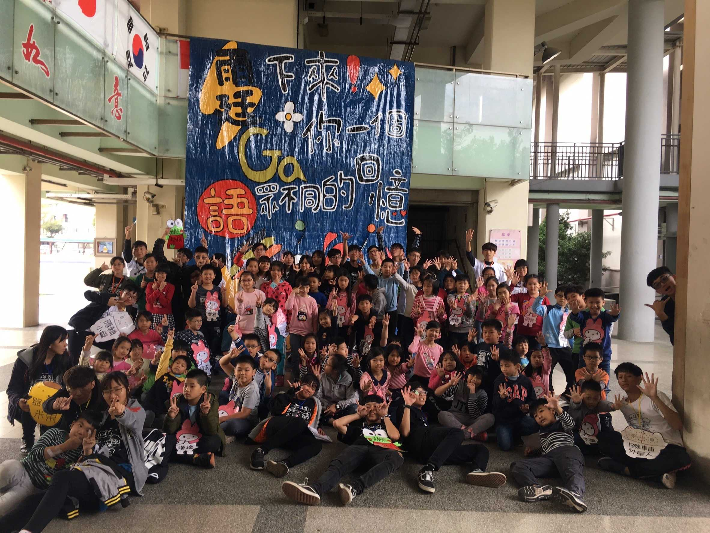

高中時期我參加了社團，甚至在高二時當上了幹部。在這個社團裡，我辦了大大小小的活動，迎新、寒假育樂營以及暑期育樂營，每個活動都是從零到一百完全由我們規劃、安排，像是企劃書、場地、接洽、海報、報名表、遊戲都是我們一點一滴去準備的，即便有些不是我去處理的，也能多少知道大概怎麼做，當總召則是我認為我當過最累、最麻煩的職位。此外，在辦活動期間，也能認識到外校的夥伴，一起辦活動也使我們感情越來越好，有的人至今也還在聯絡。若不是疫情嚴峻，我們社將會舉辦一年一度的社慶，會有來自北、中、南的夥伴前來參加，一同觀賞我們社準備的舞蹈、各個小活動及精美周邊商品。當初我們舞已準備好三分之二，活動流程、商品、海報等等也都準備得差不多了，卻偏偏碰上了新冠病毒的肆虐，使得全台各大社團紛紛取消、延後社慶日期，而我們也慘遭波及。不過當時的我們也處在烏煙瘴氣的時期，整個社因為社慶的事情常常吵架、冷戰，導致當時的我們也不太想繼續辦下去，進而發展到取消社慶的地步。

迎新

校內活動

寒假育樂營